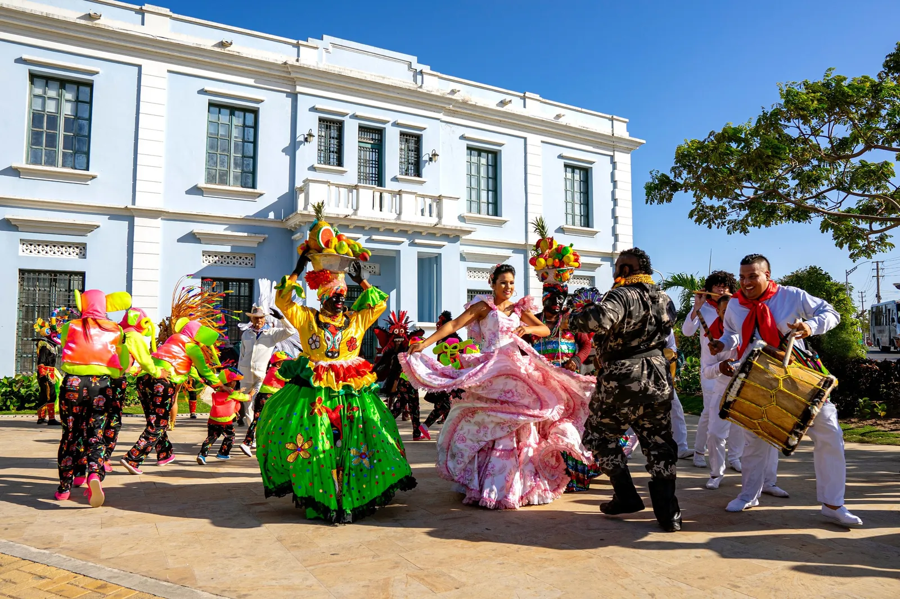
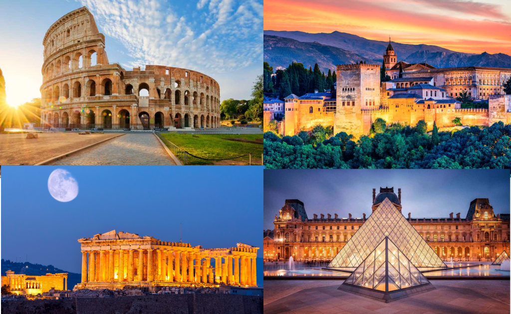

Viajar no solo significa recorrer nuevos lugares, sino también sumergirse en la cultura local, conocer tradiciones y probar sabores auténticos que enriquecen cada experiencia. A través de la gastronomía, es posible comprender la historia, las costumbres y la identidad de cada región, convirtiendo cada plato en una oportunidad para descubrir algo nuevo. En nuestra plataforma te ofrecemos rutas culturales y gastronómicas diseñadas para que vivas experiencias únicas, llenas de aprendizaje y momentos inolvidables.
Cada destino tiene algo especial que ofrecer, desde mercados tradicionales hasta restaurantes reconocidos internacionalmente. Explorar estos espacios permite conectar profundamente con la cultura local y disfrutar de una experiencia completa que va más allá del turismo convencional.

